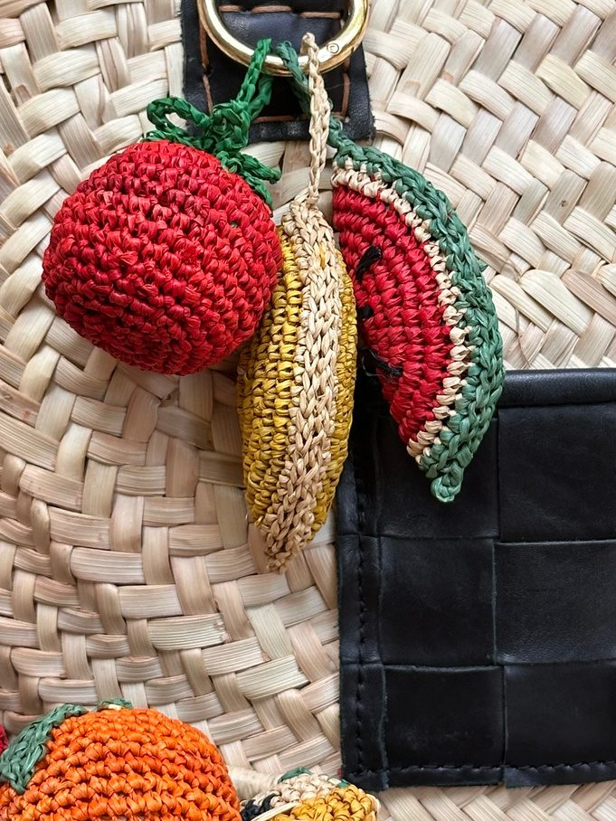
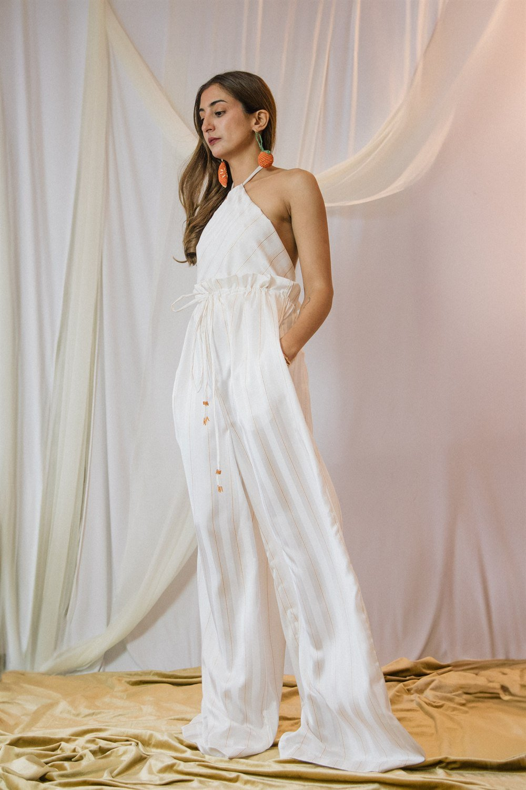
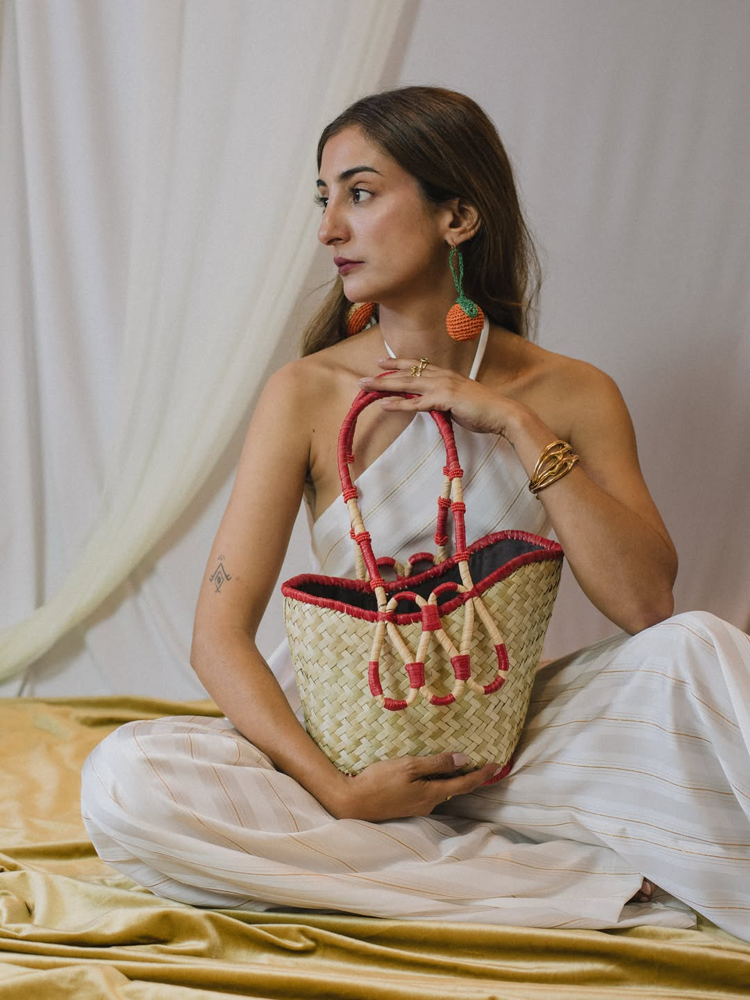
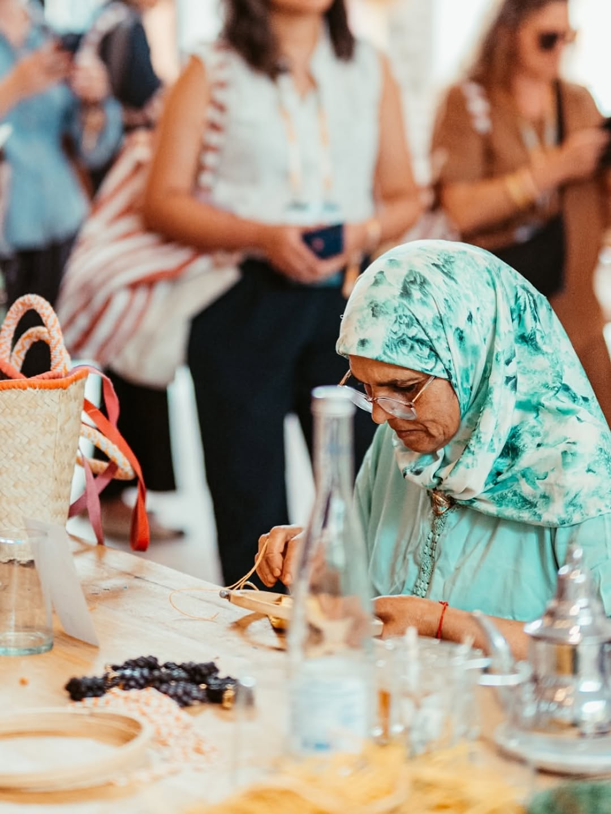

Trio MarchéCerise · Citron · Pastèque
Printemps–Été 2026Spring–Summer 2026Primavera–Verano 2026İlkbahar–Yaz 2026ربيع–صيف 2026Marrakech
Fait main. Fait pour voyager.Hand-made — Made to travelHecho a mano — Hecho para viajarElde yapıldı — Yolculuk için yapıldıمصنوع يدويًا — مصنوع للسفر
Sacs, charms, bijoux et prêt-à-porter en matières locales et en éditions limitées. Faits main par notre atelier 100 % féminin à Guéliz. Une pièce à la fois, jamais deux fois la même.Bags, charms, jewellery and ready-to-wear in local materials and limited editions. Hand-made by our 100 % female atelier in Guéliz. One piece at a time, never twice the same.Bolsos, charms, joyas y prêt-à-porter en materiales locales y ediciones limitadas. Hechos a mano por nuestro taller 100 % femenino en Guéliz. Una pieza a la vez, nunca dos veces la misma.Yerel malzemelerle ve sınırlı sayıda üretilen çantalar, charm’lar, takılar ve hazır giyim. Guéliz’deki %100 kadın atölyemizde elde yapılır. Her seferinde tek parça, hiçbiri diğerinin aynısı değil.حقائب وتعليقات ومجوهرات وملابس جاهزة من مواد محلية وفي إصدارات محدودة. مصنوعة يدويًا في أتيليهنا النسائي 100 % بجليز. قطعة واحدة في كل مرة، لا تتكرر مرتين.




L’esprit YZAThe YZA spiritEl espíritu YZAYZA ruhuروح YZA
Le savoir-faire
De 2 à 70 h de travail manuel : toutes nos pièces sont réalisées par les artisanes de l’atelier YZA.


Les préférés
 Le Marché aux Fruits
Voir les charms
Le Marché aux Fruits
Voir les charms

La Sculpture Voir la collectionL’atelier
66 rue Yougoslavie, GuélizChaque pièce est crochetée en raphia par les femmes de notre atelier, à Marrakech.
Comprendre comment
Elles portent YZA
YZA Girls
De Marrakech à Tokyo en passant par l’Île Maurice, les YZA Girls portent leurs pièces aux quatre coins du monde et à travers les années.From Marrakech to Tokyo by way of Mauritius, the YZA Girls carry their pieces to the four corners of the world — and across the years.De Marrakech a Tokio, pasando por la Isla Mauricio, las YZA Girls llevan sus piezas a los cuatro rincones del mundo — y a través de los años.Marakeş’ten Tokyo’ya, Mauritius üzerinden — YZA Girls parçalarını dünyanın dört bir yanına ve yıllar boyunca taşıyor.من مراكش إلى طوكيو مروراً بجزيرة موريشيوس، تحمل فتيات YZA قطعهنّ إلى أربع زوايا العالم — وعبر السنين.